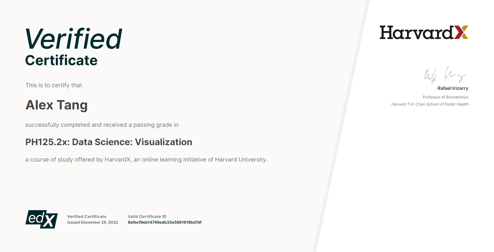
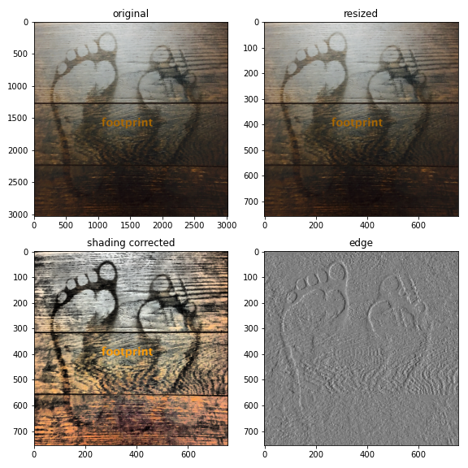

A picture is worth a thousand words; A journey of a thousand miles begins with a single step.
1. edX: Data Science: Visualization; by Harvard University
Certificate (hover over thumbnail to enlarge and move away to return; click here to verify on edX)

My first online course certificate arrived in snow - long due!
2. Coursera: Machine Learning Specialization; by Stanford University, DeepLearning.AI
Certificate (hover over thumbnail to enlarge and move away to return; click here to verify on Coursera)
Finally - the best new year gift from Andrew Ng!
Colleges on Map
- Project: Colleges on Map (github link)
- webpage of the result
Summary
Using acceptance rates, admission yield rates, student/faculty ratios, and SAT scores, I clustered the US colleges offering doctoral degrees and showed the between-group difference in distribution for three selected features. Group 4, consisting of some elite colleges, is highlighted in red in the bar plots.
I also assigned colleges on the map with information accessible by hovering over the pins.
The two screenshots below demonstrate some of the outcomes. See the link above for more details.

Visualization is an effective way to identify patterns, outliers, and even errors, in data, especially for large and messy datasets. For example, in this project, I easily spotted an error in the College Scorecard about the geographical location of a Florida college, Ana G. Mendez University (collegescorecard.ed.gov - link to this college). As shown in the above, at the bottom right of the screenshot we can see that this college was mapped to Puerto Rico by mistake. This error is similarly seen (at the time of writing) with the map in the website at collegescorecard.ed.gov. I am contacting the website for a correction.
College Map Dashboard
- Project: College Map Dashboard (github link)
- webpage of the app (to be deployed...)
Summary
Using the data collected in the first project, I have built a dashboard app using the Python package Streamlit. The purpose is to provide a quick way for users to learn the basic facts about a college by just hovering over them. To use it, we can select a State and then a College from the sidebar menus to label all associated schools with markers on map. Hovering over the markers will display some facts, and clicking on the selected one will provide further information in a popup.
A screenshot below demonstrates the basic utilities of the app. Please try the app for details, either locally or on Streamlit Cloud following the above link (deployment is NOT through yet at the time of editing). It is compatible with Google Chrome browser and is known to have an issue for popup with Safari.

Image processing
- Project: Image processing (github link)
Summary
Image data are being explosively generated nowadays. They contain a huge amount of information. And thus image processing has become an important field in computer and data science. It has broad applications in medical imaging, computer vision, robotics, industrial inspection, etc.
Python is one of the popular tools for this purpose. I am interested in using Python to process images. I have started learning some basic operations, such as resizing, denoising, and segmentation. Deep learning is a great approach for many tasks in this field, and it is something one has to grasp and use.
In the below, I put together several pictures, showing some frequently used processing procedures. This footprint means a lot to me - "well begun is half done."

I also tried to blend two pictures after some processing: playing football (or soccer?) on the footprint.
For two pictures to be merged, they must be in same size. It took me a while to be able to resize pictures without stretching (change the width/height ratio) - so there created some extra spaces in edges. I tried to fill the spaces with color to best match the main part. The current colors do not look good - it requires more efforts and skills to sync the colors, and I am continuing my journey...